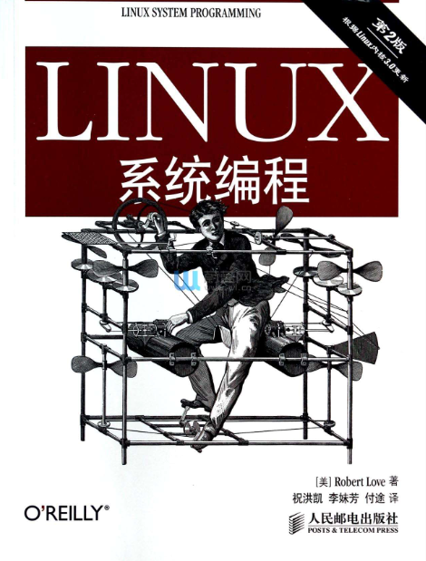

Linux程序开发指南 - 应用程序开发基础
目标
本章节通过指导开发者有选择的指定书籍的内容，通过一系列编程练习，掌握Linux应用程序开发的基础技能，掌握最基本单进程、多进程程序的开发，理解和掌握文件、IO设备的操作方法。
本章的主要内容是书本概念的抽取和划重点，同时给出一些练习作业。书本的内容作为必读项，请务必仔细学习，万万不可只看本文档就开始写代码。
学习内容
参考书籍
本章所有的学习，都基于《Linux系统编程》这本教材，同步提供电子版（上传于部门NAS/FTP服务器）。

开发环境
本章节所有的练习，均可以在上一章Windows开发环境中进行。所有调用的系统API，都可以通过man <function>或man 3 <function>命令查到详细的说明。Linux和glibc的部分API至今仍在变动中，所有的API原型均以头文件及man资料为准，从网络、书籍中看到的仅供参考。
第1章 基本概念
1.1 Linux系统编程基础
- Linux系统编程的3大基石：系统调用、C库、C编译器
- 理解系统调用的意义，查阅资料找到open函数对应的系统调用是什么
- Linux的系统调用函数有多少个
- 查阅资料，理解系统调用的原理，简单了解用户态程序调用系统时是如何陷入内核态的
- 理解调用系统调用的开销和调用glibc中普通库函数的开销差异
- 理解glibc库的作用
- 编译一个hello程序，使用
readelf -d hello查看其依赖的动态链接库，是否有glibc - gcc是什么
1.2 API和ABI
- 什么是API
- 什么是ABI
- 查阅资料理解交叉编译工具
arm-linux-gnueabihf-gcc中gnueabihf的含义
1.3 标准
- 了解POSIX和SUS的概念
- 重点了解我们推荐采用POSIX标准进行开发
- C99已经完全可用
1.4 Linux编程的概念
- Linux系统文件和文件系统的概念
- Linux系统一切皆文件，普通文件、链接、字符设备、管道等都是文件形式
- 进程是什么，线程是什么，简单概要了解
- 用户和组，大概了解，并在Ubuntu系统中做测试，嵌入式我们暂不涉及，均为root
- 权限，尤其是可执行权限，是后面开发经常碰到的坑；777、755、644分别是什么意思
- 信号是Linux系统很重要的、也很古老的进程间交互的方式，有很多坑要踩
- Linux的错误码有一套很好的体系，开发程序要善用
errno和perror()
第2章 文件I/O
本章主要介绍了基本的文件I/O接口：open()、read()、write()、close()、ioctl()的用法。这部分的概念和使用基本和VxWorks等系统是一致的。
注意点：
open()函数有两种原型，最后一个参数mode_t mode在Linux里是有具体含义的，表示权限标志，可以设置文件权限；而VxWorks的文件系统均没有权限控制的功能，这一项无意义- 对
read()有支持阻塞模式（默认）和非阻塞模式，通过open()时传入O_NONBLOCK标识来设置 - Linux的文件系统有强大的缓存管理能力，一定要记住
write()完成不代表数据已经写到磁盘，很可能还在内存，立刻断电是会丢数据的；文件系统可以设置sync模式或手动调用sync()来强制落盘（这个词汇在Linux里很常见） - 文件的多路复用可以采用
select()也可以采用poll()，新系统还有epoll等API，在Linux的高性能并发编程中，关于poll、epoll的讨论和介绍非常多，是个重点 select()的一个另类却通用的做法是实现一个可跨系统移植的延时函数- 2.11内核内幕部分，简单看即可，关键记住cache是深入Linux骨髓的东西，也会碰到各种坑
第3章 缓冲I/O
本章介绍了glibc对标准文件I/O进行封装后的缓冲I/O，主要就是fopen()、fread()等接口，这部分内容与其他系统是一致的，可以简单学习，了解一下。一般在一些文本文件的操作中，缓冲I/O接口比文件I/O接口更加方便实用。
第4章 高级文件I/O
本章难度较高，我们选择其中几个小点来学习：
4.3 存储映射
学习掌握将一个文件直接映射到一片内存的骚操作，这个特性利用了系统页面缓存，在某些场合特别方便。
我们后面会介绍的共享内存、用户态直接访问物理内存等高级功能，都会利用这个mmap()，目前我们只需要掌握最简单的打开文件，对其进行mmap映射的基本用法即可。
4.6 I/O调度器
我们要理解Linux设置I/O调度器的原因，I/O调度器在其他硬实时系统中试不存在的，调度器的好处是什么。理解概念， 知道有I/O调度器的概念，知道我们可以通过设置选择一种适合自己应用的调度器，在碰到奇怪问题的时候可以想到系统还有I/O调度器可能导致一些不符合预期的现象。
第5章 进程管理
Linux应用程序都是一个个进程，所以本章节很重要，其中有大量的概念和VxWorks有所区别，需要反复阅读和测试。
- 理解通过shell启动一个程序，其父进程是谁
- 如何用程序获取自己的PID、PPID
- 如何用程序启动一个新进程，即
fork/exec系列函数的使用，重点 - 理解
execl()、execlp()等函数的区别 fork和vfork应该优选哪个- 进程退出后，
wait()和waitpid()的作用 - 避免出现僵尸进程是Linux进程管理中的重要工作，开发时要注意子进程资源的回收
- 通过
wait()/waitpid()获取进程结束后的返回值 system()与fork/exec的区别，system()的缺点、方便之处- 对于用户组、会话相关内容(5.6、5.7），可以先忽略，嵌入式Linux暂不涉及多用户及进程组
- 守护进程的概念，用途
进程和子进程的继承性
- 子进程会复制父进程的大多数参数和状态，包括内存、堆栈、文件描述符、信号处理函数等
- 子进程不会继承父进程的pid、统计信息、挂起的信号、文件锁
第6章 高级进程管理
对我们嵌入式Linux，对RTOS的熟悉程度比Linux更高，高级进程管理中关于进程优先级的概念，与传统RTOS有所区别。同时优先级又分抢占式优先级和nice优先级，进一步复杂化了Linux的进程调度概念。
这一章节应作为重点章节，反复阅读，反复练习，争取做到精通。这对于编写有实时性要求的应用程序来说非常重要。
普通进程（非实时进程）的调度行为
- 我们要了解Linux内核当前的默认调度器是CFS
- 基于CFS的应用程序，如何开发合理的应用，“表现友好”
nice值的概念，+20优先级高还是-20优先级高- 了解多处理器环境中，如何设置处理器亲和力（概念性）
实时系统
- 硬实时的概念
- Linux实时性如何
- 进入Linux内核目录，
menuconfig找到并观察当前Linux内核的调度策略，是否支持RT-Linux - 理解抢占式调度的概念，理解FIFO、Round-Robin的概念
- 静态优先级0-99，多少优先级更高
- 调度策略有
SCHED_OTHER、SCHED_FIFO、SCHED_RR三种 - 掌握如何设置进程为实时进程，如何设置调度策略和优先级
- 掌握使用
chrt命令在命令行中调整进程优先级和调度策略
额外重点：
- 实时进程可以轻易把系统搞死，有哪些注意要点
- 网上搜索用于评估系统实时性的工具，对比实时系统和非实时系统的差异
- 从TI官网下载Linux内核的两个版本：普通版本、RT版本，通过
menuconfig和测试工具，对比理解RT-Linux的特性
资源限制部分，可以暂时简单略过。
第7章 线程
线程是本书另一个重要的概念，与进程、高级进程管理一样，需要重点研究学习。
基本概念
- 理解多线程的好处、用途，与多进程的差异
- 线程之间的内存是否可见，资源是否共享
- 线程模型理解有点复杂，可以忽略
- 线程模式部分，非常重要，这是一个变成思想和范式，尤其是事件驱动、线程池等概念，在我们未来新一代的Linux程序架构中有广泛的应用
- 线程带来的并发问题，同步与互斥的问题
Pthread
Linux有两种线程实现，目前主要使用NPTL，了解就好。
我们主要学习pthread_系列的API，并掌握线程的创建、退出、监控、优先级调度设置等操作。
- 调用pthread系列函数，编译时要增加-pthread参数
- 线程的创建方法
- 线程的退出，自杀和被杀
- 线程的join、detach与僵尸进程的关系
- 获取线程退出的返回值
- 基于pthread_mutex的互斥量使用
第8章 文件和目录管理
本章的内容非常实用，涉及到Linux文件系统的操作，在嵌入式设备中经常需要对存储的文件进行操作、遍历、移动，并可能会执行一些磁盘控制类的操作。
本章内概念性的内容较少，都是实用的函数介绍，请逐一对照书本进行实际练习。
8.7节 监视文件事件，是VxWorks系统很少涉及的部分。inotify可以实现一个高级的文件变动通知，对于一些需要时刻监视文件变化的场合（如配置文件变化），可以让程序更加合理优雅。
注：文件的扩展属性嵌入式Linux不涉及
第9章 内存管理
本章内容稍微不那么重要，需要掌握的知识点如下：
- 内存段的概念：text、stack、data、heap、bss等
- 动态内存分配的方法：malloc、calloc、realloc、free
- mmap的另一个用法，匿名映射，以及malloc函数如何自动选择从heap申请内存还是匿名映射
- 内存锁定部分无需关注，嵌入式系统没有swap机制
- 最后一节OOM请关注，Linux开发中如遇到内存过度占用，自身或一个不相关的进程可能被系统强制杀死来释放内存
第10章 信号
信号是Linux系统的一个重要机制，相比于其他系统，信号在Linux中的地位非常重要，我们也要对信号有一定的认识和理解。
- 理解我们在shell中用
Ctrl+X、kill强制杀死进程的原理 - 熟悉常见的信号：SIGABRT、SIGALRM、SIGCHLD、SIGHUP、SIGKILL、SIGTERM等等
- 理解信号默认操作的意义，并尝试使用
signal()重新定义信号处理函数 - 使用
kill()来发送指定的信号给特定的进程 - 信号处理函数是一个“软中断”，在中断中的调用函数要精简、可重入
- 信号集部分可以略过
- 除了
signal()，我们更多的要掌握sigaction()的使用，尤其是掌握通过siginfo_t给信号处理函数传递参数的方法 - 上网搜索，了解可靠信号与不可靠信号的区别，可靠信号
SIGRTMIN~SIGRTMAX是后期扩展的一批信号，支持排队，不会丢失遗漏 - 上网搜索，了解在一个多线程程序中，信号的行为是很特别的，非常容易引起一些不可预见的错误，主要是信号究竟发给了哪个线程，有时候是随机的，这一点需要额外阅读一些资料和文章来理解
第11章 时间
本章节也是一个重点，将介绍Linux系统中与时间、延时相关的各种操作。
时间的读取和设置
- 理解多种POSIX时钟的含义
CLOCK_REALTIMECLOCK_MONOTONICCLOCK_MONOTONIC_RAWCLOCK_PROCESS_CPUTIME_IDCLOCK_THREAD_CPUTIME_ID
- 学习和掌握Linux系统中多种获取时间的方法，并从效率、精度、分辨率等角度进行对比
time()gettimeofday()clock_gettime()
- 学习设置时间的多种方法：
clock_settime()、adjtime()
延时
- 掌握最基本的几种延时的方法，并对比他们的差异、限制、延时精度
sleep()usleep()nanosleep()clock_nanosleep()
- 分析延时期间修改系统时间可能产生的影响
- 掌握使用
clock_nanosleep()实现校时无关延时函数的方法 - 掌握使用
select()实现一个可移植的高精度延时函数的方法 - 定时器
alarm()、timer_系列函数的使用
关于系统实时性与定时器精度的关系
我们知道操作系统的调度核心离不开定时器，Linux系统在2.6之后引入了高精度定时器的概念hrtimer，请上网搜索相关文章，大概了解高精度定时器与以前Linux内核的节拍定时器的区别。理解为什么现在的Linux内核可以提供ns级精度的定时服务。
请做测试程序，验证我们ns级定时器的定时精度，是否真的能达到很高的程度？试着写一个1ms运行一次的程序，在1ms任务里读取系统时间，检测误差。当系统其它负荷很高时（可以尝试写一个很占用CPU资源的命令），1ms的任务实时性是否收到了影响？
一个占用cpu的命令例子
for i in `seq 1 $(cat /proc/cpuinfo |grep "physical id" |wc -l)`; do dd if=/dev/zero of=/dev/null & done
如果我们把内核更换为RT-Linux版本，1ms的走时精度是否有所提高？
问题：
在RT-Linux系统中，如何实现一个非常精确的1ms定时任务？
- 定时器
clock_nanosleep()- ？
请多尝试一些延时函数的方法，看看谁可以实现更高的定时精度？
提示：可以多在RT-Linux官网上看看有什么教程和范例，上面有一个非常好的例子，为大家展示了clock_nanosleep()的灵活性
延时被信号打断问题
Linux中有大量的阻塞函数（最典型的就是延时），在阻塞期间如果有信号（signal）产生，当前阻塞的函数会提前结束，并返回错误码EINTR。这是Linux系统应用程序开发中的一个需要特别关注的点。通常有几种处理措施：
- 线程屏蔽信号
- 检测函数返回值及errno，在遇到
EINTR后重新启动延时，完成剩余的延时时间
信号是Linux应用程序一定会遇到的情况，必须要处理，请网上搜索相关资料，解决上述问题。
阶段测试
正确使用open创建文件
编写测试程序，在/root目录下创建多个文本文件，内容随意，权限分别为：
- -rwx------
- -rwxr--r--
- -rw-r--r--
- -rwxr-xr-x
fork/exec练习
编写程序，使用fork/execl调用ping执行ping 192.168.2.2的命令。分别使用不同的exec系列函数完成调用。并理解其中参数传递与main函数中argv[...]之间的关系。
请做好exec函数返回错误后的错误码检测工作，尝试认为制造文件不存在等问题，看错误码是否正确反映问题。
同时请加强对fork函数后父进程、子进程的区分和理解，在程序中printf清晰说明当前运行环境是父进程还是子进程。
TIPS
ping命令有-c参数可以指定ping测试的次数，默认不会停止
waitpid练习
- 在上节
fork/exec练习中，尝试反复调用ping命令制造出大量的僵尸进程。 - 实验通过
wait()、waitpid()方法回收子进程 - 尝试通过
wait()、waitpid()方法获取ping命令的返回值，封装ping函数返回网络通断情况，0: 网络正常、-1：网络异常
普通进程优先级练习
- 编写一个程序，设置自己的
nice优先级为10 - 通过
nice命令修改该进程的优先级 - 尝试写一个死循环，通过降低
nice值看能否让系统不那么卡
实时进程练习
- 分别按相同的方法编译普通Linux内核与RT-Linux内核（TI SDK都有提供）
- 运行
cyclictest对比两种系统的实时性差异 - 编写程序，将自己设置为实时进程，并设置实时优先级
- 使用
chrt动态查看、修改该进程的调度策略、优先级
线程练习
- 编写一个多线程的程序
- 主线程监控子线程的运行
- 当子线程完成工作后，带返回值退出，主线程应捕捉到子线程退出事件，并将返回值获取并打印出来
- 设置一个全局变量，被所有线程读取，设置合理的互斥量机制
- 当主线程不
join子线程时，子线程退出时会发生什么？通过ps命令观察
目录基本操作
一个应用程序要应该要做到可以放置在任何路径下运行，可能这需要一些获取当前文件路径、获取当前目录的操作。 请编写程序，获取应用程序自身的：程序所在路径、当前工作目录，并仔细体会这两者的差异。
遍历目录练习
创建一个具有两级子目录的复杂目录结构，编写代码遍历所有目录，并列出每一级目录下的文件。
创建符号链接
编写测试程序，在/root目录下创建一个名为link-to-busybox的符号链接，指向系统busybox主程序
/dev下特殊设备
- 尝试使用
/dev/random、/dev/urandom设备获取硬件随机数 - 尝试向
/dev/null写数据，观察效果 - 尝试从
/dev/zero读数据，观察效果
inotify练习
- 模拟一个参数配置进程和一个参数消费者进程
- 使用inotify监控参数配置文件
- 当参数变化时，消费者进程可以立刻响应
信号的练习
- 编写一个能捕捉
Ctrl-X的测试程序，启动后禁止被Shell的Ctrl-X杀死 - 想办法用其他方法杀死上面的程序
- 设计一个使用
SIGUSR1信号的测试程序，使用sigaction()注册信号处理函数，并使用siginfo_t向信号处理函数传入一个变量
时间练习
- 编写一个设置时间的程序，使用adjtime设置一个时间，想办法观察时钟缓慢调整的过程
- 1ms定时程序开发：
- 要求使用多种延时函数，分别实现固定1ms间隔执行任务
- 在1ms任务里记录每次执行任务的间隔，评估1ms的精度
- 对比普通Linux内核与RT-Linux内核在相同程序下的延时精度差异
- 学习RT-Linux官网文章、范例，编写一个标准的1ms固定周期定时程序
- 设置一个2秒延时函数，和捕捉
Ctrl-C信号并打印消息，想办法产生信号打断延时函数的情景，并优化程序实现更可靠的、不会被信号打断的延时程序